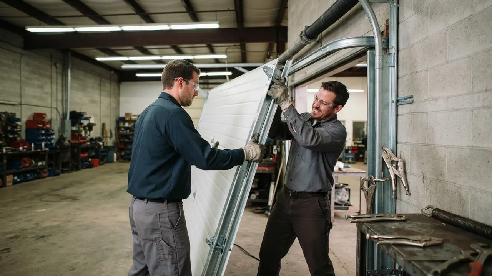

Your local team · Trolley Square
Garage Door Repair in Trolley Square, Wilmington DE
Garage Door Repair in Trolley Square means getting a snapped torsion spring or dead opener fixed before the end of the day, not next week. We work the 19806 and 19805 blocks around Delaware Avenue and Broom Street every week, so we know the tight alley-access garages, the older brick openings, and the salt air that chews through cables. One call, one visit, door working.
Local knowledge
Garage Door Repair in Trolley Square Done Right
Garage Door Repair in Trolley Square is the work of keeping doors moving in one of Wilmington's tightest, oldest, most walkable neighborhoods. We have served this area since 2010, and our techs know the difference between a Gilpin Avenue row home with a narrow brick opening and a Trolley Square West property with an alley-access garage that barely clears a full-size truck. That matters because a door that fits one block will not fit the next. We stock torsion springs, galvanized steel cables, nylon rollers, and LiftMaster and Chamberlain openers on the truck so most jobs finish in a single visit. Whether you need Trolley Square Garage Door Repair for a door off track or a full garage door company Trolley Square homeowners can call at 2 a.m., we answer. Our techs carry winding bars, C-clamps, socket wrench sets, and safety glasses, and we follow UL 325 safety standards on every opener we touch. Call (302) 556-5080 and we will get your door moving today.

Services available in Trolley Square
Garage Door Repair Services Available in Trolley Square
Every service we offer is built around the realities of Trolley Square: narrow openings, older brick, alley access, and doors that get used twice a day. If you are searching for Garage Door Repair in Trolley Square near me at 7 a.m. because your door will not close, we can usually be there the same morning. Below is what we do most in this neighborhood.
01
Garage Door Repair
General repair for Trolley Square East and West row homes, from a door off track to a stripped gear in the opener. We diagnose on arrival, quote before we start, and finish most repairs in one visit. We keep common parts for older Craftsman and Genie units on the truck so you are not waiting a week for a special order.
View service 02Garage Door Installation
New door installation for Trolley Square properties where the old door has finally given out. We measure the opening, check headroom and side clearance, and recommend a door that fits a narrow brick opening without looking out of place. Clopay and Amarr both make profiles that suit the older row home styles around Delaware Avenue.
View service 03Garage Door Opener Repair
Opener repair for LiftMaster, Chamberlain, Genie, Linear, and Marantec units common in Trolley Square garages. Dead remotes, stripped gears, and burned-out logic boards are the usual calls. We test the safety reverse under UL 325 before we leave, which matters on doors facing high-foot-traffic sidewalks near the shopping district.
View service 04Garage Door Opener Installation
Opener installation for Trolley Square homeowners upgrading from an old chain drive to a belt or jackshaft unit. Belt drives run quieter, which helps on row homes where a garage shares a wall with a neighbor. We handle the wiring to NEC electrical code and set the travel limits and force settings correctly the first time.
View service 05Garage Door Spring Repair
Spring repair is our most common Trolley Square call. Torsion springs on these doors cycle thousands of times a year, and when one snaps the door will not lift. We replace both springs at once, match the wire gauge and inside diameter to the door weight, and use proper winding bars and C-clamps. Most spring jobs are done in under two hours.
View service 06Garage Door Cable Repair
Cable repair for Trolley Square garages where salt air and humidity have rusted the galvanized steel cables. A frayed cable can snap and send the door crooked or off track. We replace both cables as a pair, inspect the cable drums, and check the bottom brackets before we call the job done.
View serviceBuilt around the city
How We Execute Garage Door Repair in Trolley Square
Garage Door Repair Trolley Square DE jobs start with a phone call and a real arrival window, not a four-hour block. We run trucks out of Wilmington, so most Trolley Square addresses are 15 to 25 minutes from dispatch. When we arrive, we walk the door, test the opener, and check the springs, cables, rollers, and track before we quote. You get a price before we start, and we do not add line items mid-job. Parking is the one thing that slows us down here. Dense blocks around Delaware Avenue and Gilpin Avenue mean we sometimes park a block away and carry tools in. We plan for that. If you are in an alley-access garage off Broom Street or Trolley Square West, let us know on the phone so we bring the right ladder and the compact tools. We work to UL 325 and DASMA standards, and we pull permits when the job requires it under New Castle County rules. For a 24/7 garage door repair Trolley Square DE call, we dispatch the nearest tech, day or night.
Standard ladders and full-size torsion bars do not always fit. A door that would be a 90-minute job in a suburban garage can take longer here because of access. We carry compact winding bars, low-profile ladders, and short-handle tools on the Trolley Square route. We ask about access when you book so the tech arrives with the right gear the first time.
Galvanized steel cables rust faster here than inland. Hinges stiffen, rollers seize, and bottom brackets corrode. Doors that would last 10 years elsewhere often need cable work at year six or seven. We use marine-grade lubricant on hinges and rollers, inspect cables closely on every call, and recommend a yearly tune-up for doors that face the river. Catching rust early is cheaper than replacing a snapped cable and a bent panel.
A door installed in a 1920s brick opening may not sit square, which puts uneven load on springs and rollers. This shortens spring life and causes the door to bind on one side. We measure the opening on every install and adjust the track and brackets to compensate. On repair calls, we check for uneven wear and correct the alignment rather than just replacing the failed part.
Every opener we install or repair must meet UL 325, which covers the safety reverse and entrapment protection. On Trolley Square doors facing busy sidewalks, this is not optional. We test the reverse on every job and note it on your invoice.
This standard covers installation, service, and labeling of garage doors. It is the reference we use when we check spring tension, cable condition, and bracket integrity. Following it keeps your door safe and your warranty intact.
Opener wiring and outlet placement must meet NEC. On older Trolley Square homes, we sometimes find openers plugged into ungrounded outlets or run on undersized wire. We correct that when we install or replace an opener.
Common local problems
Common Garage Door Problems in Trolley Square
Rusted cables snapping on older doors
Torsion springs failing early
Openers failing on older Craftsman and Genie units
Doors binding in narrow brick openings
Warning signs
Signs You Need Garage Door Repair in Trolley Square
This is usually a sensor misalignment or a dirty lens, not a major failure. It is also a safety issue under UL 325. We realign the sensors, clean the lenses, and test the reverse. Most calls like this take under an hour.
That bang is almost always a torsion spring snapping. The door becomes very heavy and unsafe to lift by hand. Stop using the opener and call us. We replace both springs at once and check the cables and drums while we are there.
A door that lifts unevenly usually has a stretched or snapped cable, a worn roller, or a bent track. Forcing it can damage panels and the opener. We diagnose the cause and fix the underlying issue, not just the symptom.
If you hear the motor but the door stays put, the drive gear or chain has likely failed. On older Craftsman and Genie units, a stripped plastic gear is the usual cause. We can often repair the gear instead of replacing the whole opener.
Noise means friction, and friction wears parts out faster. Worn nylon rollers, dry hinges, and loose track brackets are the common causes. A tune-up with lubrication and roller replacement usually quiets the door and extends its life.
Pricing and expectations
Garage Door Repair Pricing in Trolley Square
Typical 2026 pricing for Garage Door Repair in Trolley Square runs $180 to $450 for most common repairs, with spring replacements on the higher end and sensor or remote fixes on the lower end. A new opener installed runs $450 to $900 depending on the model and whether we need to run new wiring. Full door replacement starts around $1,200 and goes up from there based on size, material, and whether the opening needs modification. We quote before we start, and the price on the quote is the price on the invoice. No trip charges inside Trolley Square, and no after-hours surcharge on emergency calls within the neighborhood.
A single-car door on a Trolley Square row home takes lighter springs and a smaller opener than a two-car door. Heavier doors need higher-cycle springs and a more powerful opener, which raises parts cost. We weigh the door before quoting so the spring match is correct.
Alley-access garages off Broom Street and parts of Trolley Square West can add 15 to 30 minutes to a job because we park a block away and carry tools in. We do not charge extra for that, but it does affect how we schedule the day.
Common parts like torsion springs, cables, rollers, and LiftMaster or Chamberlain openers are on the truck. Older or discontinued doors may need a special-order panel or bracket, which adds a few days to the timeline. We tell you upfront if that is the case.
We know the route
Navigating Trolley Square: Landmarks We Use
Trolley Square is easy to navigate once you know it, but the one-way streets and tight blocks can slow down a tech who does not. We use the Trolley Square shopping district as our main orientation point, then work outward along Delaware Avenue and Gilpin Avenue. St. Ann's Church and Wilmington Friends School are two more landmarks we use to confirm we are on the right block. If you are near Trolley Square Plaza, tell us on the phone and we will know exactly where to park.
Trolley Square shopping district
The commercial center of the neighborhood. We use it as our main orientation point when routing to addresses on Delaware Avenue, Gilpin Avenue, and the surrounding residential blocks.
St. Ann's Church
A well-known landmark on Gilpin Avenue. It helps us confirm we are on the correct block when routing to nearby residential addresses.
Wilmington Friends School
A recognizable landmark near the northern edge of the neighborhood. Useful for orienting techs heading to addresses on the Alapocas side of Trolley Square.
Trolley Square Plaza
A commercial anchor in the district. We use it to identify the correct parking approach for addresses on the surrounding blocks.
Trolley Square shopping district
A walkable commercial district with restaurants, shops, and offices. Several properties have service doors or rear-access garages, and we handle commercial door calls in this area on a regular basis.
Delaware Avenue corridor
A mixed residential and commercial corridor running through the neighborhood. We see a mix of residential garage calls and small commercial door work along this stretch.
Trolley Square service coverage
Trolley Square Neighborhoods We Serve
We cover every block in and around Trolley Square, from the row homes near Delaware Avenue to the alley-access garages off Broom Street. If you are in 19806 or 19805, we are already nearby. Here is what we see most in each area.
Trolley Square EastTrolley Square WestDelaware AvenueBroom Street
Delaware Express Garage Door Service3601 Old Capitol Trl A5, Wilmington, DE 19808, United States, Wilmington, Delaware
Local results
Recent Garage Door Repair Jobs in Trolley Square
A homeowner on Gilpin Avenue called at 6:45 a.m. after a torsion spring snapped. The door would not lift, and the car was trapped inside.
We dispatched a tech within 20 minutes. He replaced both torsion springs, matched the wire gauge to the door weight, and checked the cables and drums while he was in there. The old springs had been in service for over a decade. Door was back in service by 9 a.m. The homeowner made it to work only an hour late. We also noted the cables would need replacement within a year and quoted it upfront.
A Trolley Square West homeowner had a LiftMaster opener that would run but not lift the door. The motor turned, but the door stayed put.
The plastic drive gear had stripped, a common failure on that model. We replaced the gear and sprocket assembly, cleaned out the old grease, and re-lubricated with the correct product. We also checked the door balance and adjusted the opener force. Repair completed in about 90 minutes for a fraction of the cost of a new opener. The homeowner scheduled a tune-up for the following spring.
A Broom Street property had a door off track after a cable snapped. The door was hanging crooked and would not close, leaving the garage open to the alley.
We treated it as an emergency because the garage was unsecured. The tech replaced both galvanized steel cables, replaced a bent bottom bracket, and reset the door on the track. He checked the rollers and hinges while he was there. Door was secure and running smoothly within two hours of the call. We recommended a yearly tune-up to catch cable rust earlier next time.
Notes from local customers
What Trolley Square Customers Say
Spring snapped on a Saturday morning and I had a car trapped in the garage. Called Delaware Express and a tech was here in about 25 minutes. He had the springs on the truck, quoted me before he started, and had the door working in under two hours. No upsell, no runaround. I have already recommended them to two neighbors on my block.
My opener was making a grinding noise and then just stopped lifting the door. The tech diagnosed a stripped gear, showed me the worn part, and had it fixed the same afternoon. He also adjusted the door balance and lubed the hinges. The door runs quieter now than it did before. Fair price and no pressure to replace the whole opener.
Cable snapped and the door came off track on a Sunday evening. They answered the phone, gave me a real arrival window, and showed up when they said. The tech replaced both cables and a bent bracket and had the door secure that night. Only reason it is not five stars is that parking on my block is tight, but that is not their fault.
Plan for the season
How Seasons Affect Garage Door Repair in Trolley Square
Book a tune-up in March or April before the rush. We lubricate hinges and rollers, check spring tension, and test the safety reverse. It is the cheapest way to avoid a mid-summer breakdown.
Keep the area around the opener motor clear for airflow. If your door faces west and gets direct afternoon sun, consider insulation to reduce heat buildup in the garage.
Check your bottom seal before the first hard rain. If it is cracked or missing chunks, replace it. A $60 seal replacement is cheaper than dealing with a wet garage all winter.
Lubricate hinges and rollers with a cold-weather lubricant before the first freeze. If your door is slow or noisy, get it serviced in the fall rather than waiting for a February breakdown.
Nearby service areas
Nearby Cities We Serve from Trolley Square
Trolley Square is one stop on a route that covers most of Wilmington. If you are just outside the neighborhood, we likely serve your area too. Here are the nearby locations we cover most often.
Before you hire
What to Ask Before Hiring a Garage Door Repair in Trolley Square
Are you licensed and insured in Delaware?
Do you stock parts on the truck, or will you have to order them?
Will you quote the price before you start?
Do you test the safety reverse after the repair?
Do you offer a warranty on parts and labor?
Trust and compliance
Licensed, Insured, and Local
Delaware contractor license
New Castle County business license
DASMA certification
Door and Access Systems Manufacturers Association
IDEA certification
Institute of Door Dealer Education and Accreditation
Better Business Bureau of Delaware
Accredited member
Wilmington Chamber of Commerce
Member
Most repairs run $180 to $450 in 2026, depending on the part. A sensor realignment or remote fix is on the low end. A torsion spring replacement with both springs is on the high end. We quote before we start, and there is no trip charge inside Trolley Square.
We have served Trolley Square since 2010, and our techs know the neighborhood's alley-access garages, older brick openings, and salt-air cable issues. We stock parts on the truck, quote upfront, and stand behind the work. Call (302) 556-5080 and judge for yourself.
Yes. We run 24/7 for emergency calls in Trolley Square, including nights, weekends, and holidays. If your door is stuck open, off track, or will not close, call (302) 556-5080 and we will dispatch the nearest tech. No after-hours surcharge inside the neighborhood.
Yes, for most calls placed before mid-afternoon. We keep torsion springs, cables, rollers, and common opener parts on the truck so most same-day jobs finish on the first visit. If we cannot make it the same day, we will tell you on the phone.
Yes. We repair LiftMaster, Chamberlain, Genie, Linear, Marantec, and Craftsman openers. Common calls include stripped gears, dead remotes, sensor misalignment, and burned-out logic boards. We test the safety reverse under UL 325 on every opener we touch before we leave.
Your next step is waiting
Get Garage Door Repair in Trolley Square Today
If your door is stuck, noisy, or off track, we can help. We have served Trolley Square since 2010, we stock parts on the truck, and we quote before we start. Call (302) 556-5080 and we will give you a real arrival window, not a four-hour block. Same-day service is available for most calls, and we run 24/7 for emergencies. One call, one visit, door working.
Start with the basics
Call For Garage Door Service
Call (302) 556-5080 and tell us what your door is doing. We answer during business hours and run emergency calls after hours. Most days we can get a tech to you the same day, and we will give you a window, not a maybe.